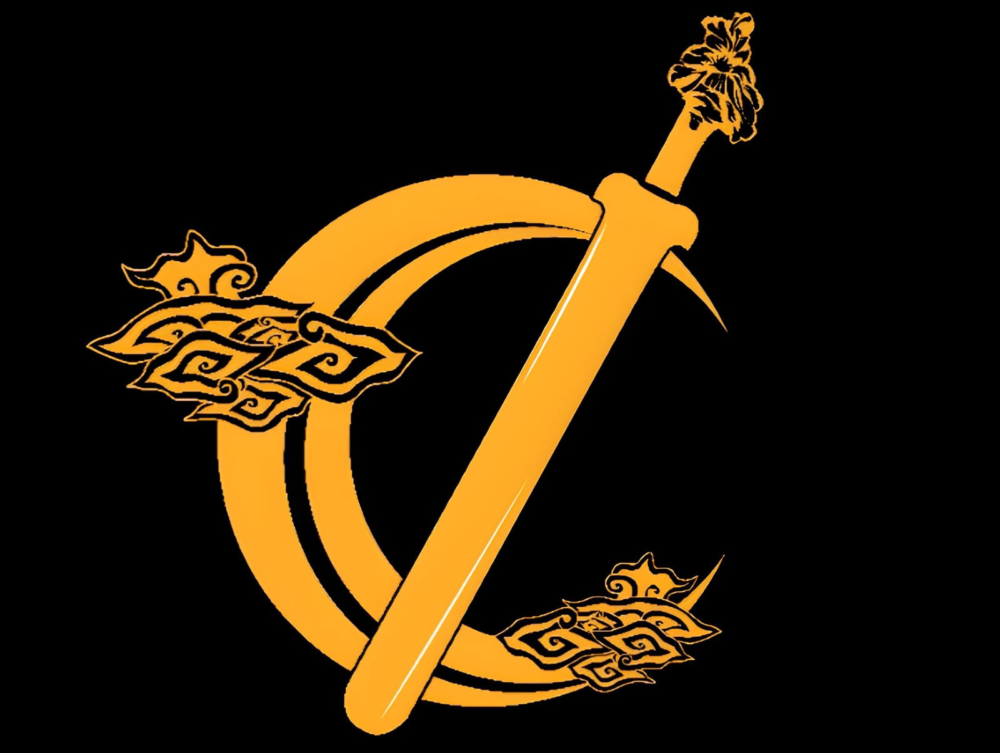

Koleksi Keris Pusaka Nusantara
Keris pilihan dengan keterangan dhapur, luk, tangguh, dan pamor yang jelas. Lihat koleksi, lalu tanyakan langsung ke penjual lewat WhatsApp.
Lihat Koleksi
Koleksi
Baru mengenal keris?
Pertanyaan Umum
Apakah keris yang dijual asli?
Setiap keris dilengkapi keterangan dhapur, luk, tangguh, dan pamor. Penjual siap menjelaskan asal-usul dan kondisi bilah melalui chat.
Bagaimana cara merawat keris?
Simpan di tempat kering, bersihkan dengan minyak khusus (warangan dan minyak cendana), dan hindari menyentuh bilah dengan tangan basah.
Apakah bisa dikirim ke luar kota?
Bisa. Keris dikemas aman dan dikirim lewat ekspedisi. Ongkos kirim dibahas saat konfirmasi.